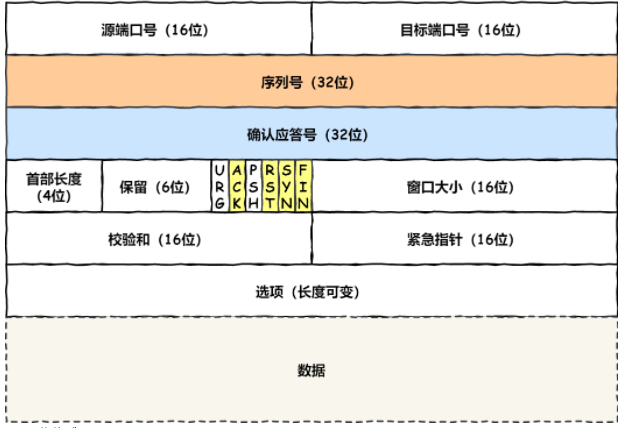
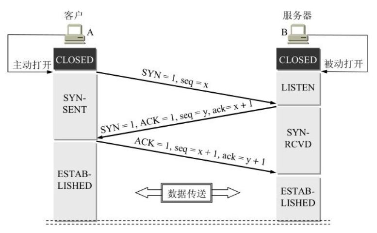
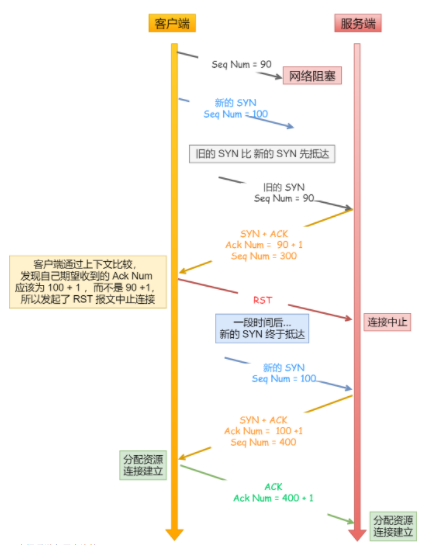
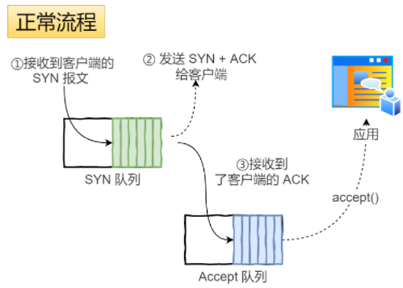
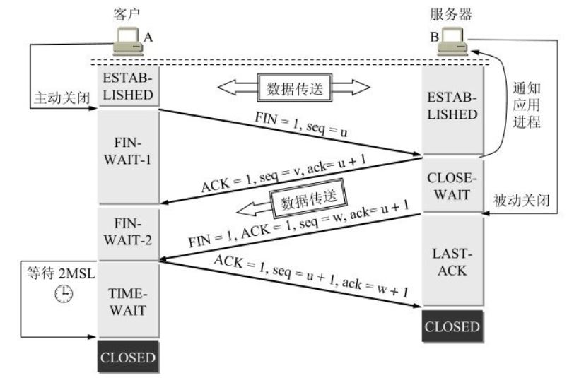
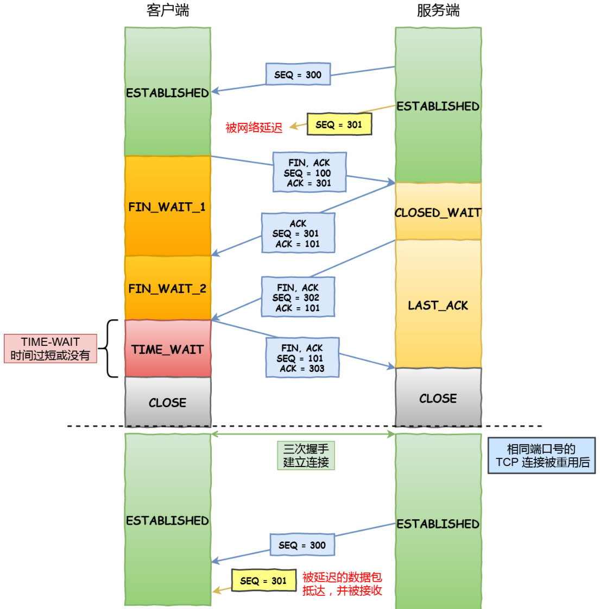
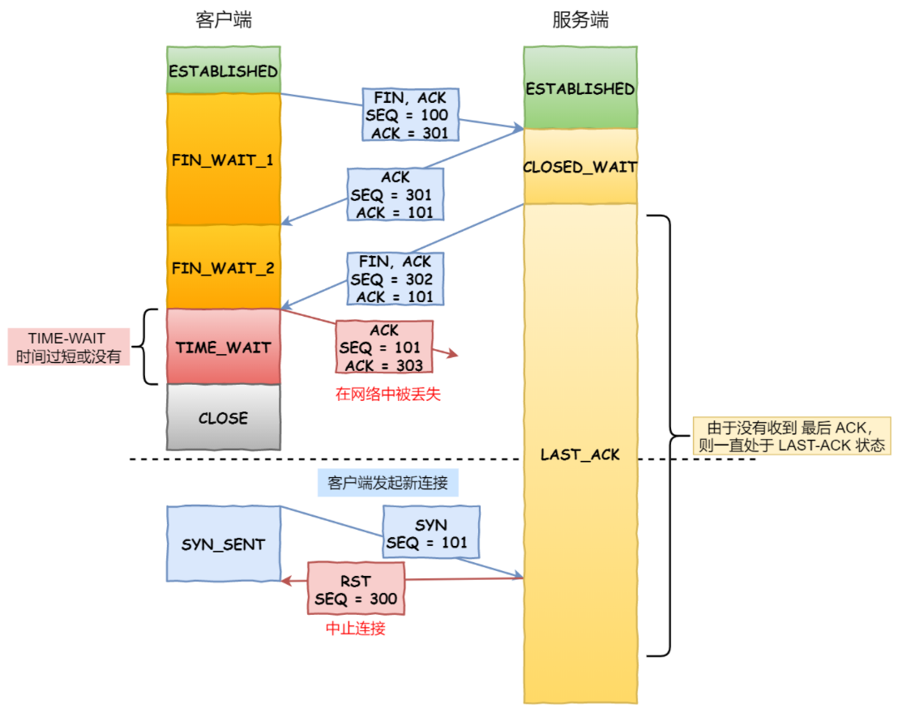
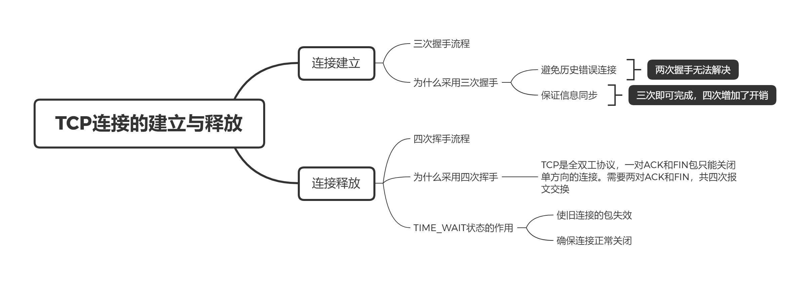

TCP连接的建立与释放
1. 介绍
TCP 是面向连接的协议，TCP 的连接需要经过三个阶段：连接建立、数据传送、连接释放。上文 TCP可靠传输和拥塞控制 介绍了 TCP 在数据传送阶段如何实现可靠传输和拥塞控制，本文主要介绍 TCP 连接的建立和释放。
再次祭出 TCP 的首部格式：

在本文中主要关注以下字段：
- SYN：同步位，该位为 1 时，希望建立连接；
FIN：中止位，该位为 1 时，希望断开连接；
ACK：确认位，该位为 1 时，确认应答的字段有效，除了最初的 SYN 包，其他的包都应该设置为 1。
2. 连接建立
2.1 三次握手
TCP 的连接用一个四元组 {源 IP，源端口，目标 IP，目标端口} 标记，TCP 建立连接的过程叫作握手，握手过程需要交换 3 个 TCP 报文段，通常称为三次握手。
这里称为三次握手主要是遵循日常叫法，RFC 文档中的描述是 three way（three message）handshake，其实是在一次握手过程中交换了三个报文。
TCP 建立连接的过程如下：

- 起初客户端和服务端都处于 CLOSED 状态，服务端创建服务，进入 LISTEN（监听） 状态，等待客户端连接；
- 第一次：客户端创建随机初始化序号 x，并在首部 seq 字段中写入，同时设置 SYN 为 1，表示为 SYN 报文，发送后进入 SYN-SENT（同步发送）状态；
- 第二次：服务端收到请求后，也随机创建一个序号 y，并设置 TCP 首部中的确认应答 ack = x + 1（见可靠传输部分），同时置 SYN 和 ACK 为 1。发送后进入 SYN-REVD（同步收到） 状态；
- 第三次：客户端收到服务端的确认后，需要向服务端发送确认，设置首部 ACK 为 1，ack = y + 1，发送后进入 ESTABLISHED（连接建立）状态；
- 服务端收到客户端的确认，进入 ESTABLISHED 状态。
2.2 三次握手的原因
最常问到的一个问题是为什么使用三次握手，而不是两次或者四次呢？主要有两个原因。
避免历史错误连接
考虑采用两次握手，TCP 使用重传保证了可靠连接，考虑这种情况，客户端发送的 SYN 包 S1 阻塞在网络中，超时进行重传 S2，与服务端建立了连接。当释放连接之后，之前阻塞的 S1 到达了服务端，便会产生新的连接，并一直等待客户端发送数据，造成资源浪费，因此引入第三次确认。

保证信息同步
由于 TCP 协议依赖序列号等数据，而在一个不一定可靠的信道上，至少需要三次交换信息才能达到信息同步：
- 1 次：A -> B，A 不知道 B 是否进行了同步；
- 2 次：A -> B，B -> A，A 知道 B 同步了某个数据，但 B 无法确认 A 收到了这个同步；
- 3 次：A -> B，B -> A，A -> B，双方完成了信息同步。
总结：两次握手无法避免历史错误连接，四次握手的通信次数过多，而三次握手是完成可靠通信的最优次数。
2.3 其他问题
SYN 洪泛攻击
在 Linux 中会维护两个队列来存储连接，一个是半连接 SYN 队列，存储完成了两次握手还没收到客户端 ack 的连接；另一个是全连接 Accept 队列， 存储已经完成三次握手的连接。
一个连接的在队列中的存储过程：
- 服务端收到客户端的 SYN 报文，创建半连接资源，将该连接添加到 SYN 队列；
- 发送 SYN + ACK，等待客户端回应 ACK 报文；
- 服务端收到 ACK，将该连接移动到 Accept 队列；
- 应用调用 accept() 后，获取该连接。

但如果客户端恶意发送大量 SYN 报文，而不发送之后的 ACK 报文，将导致服务端分配大量半连接资源，导致资源消耗殆尽，称为 SYN 洪泛攻击。
一种有效的防御手段是使用 SYN cookie：
- 在收到一个 SYN 报文后，不产生一个半连接，而是根据客户端的 IP 和端口，使用哈希算法生成一个初始序号 x，设置 seq = x 发送给客户端；
- 收到客户端的 ACK 报文后，会检验其中的 ack，合法的值应该为 x + 1。检验通过后会产生一个全连接；
- 如果未收到 ACK 报文，由于服务端并未分配资源，所以也没有危害。
握手过程丢失报文
第一次握手丢失：客户端发送 SYN 报文后，迟迟收不到服务端的 ACK，客户端将会触发超时重传，如果多次重传都失败（大概 1 分钟）后，将断开该连接。
第二次握手丢失：服务端收到了 SYN 报文，但发送的 ACK 报文丢失了。服务端未收到第三次确认，触发超时重传，客户端未收到 ACK，也会触发超时重传。当两者中任意一个达到重传上限，将断开连接。
第三次握手丢失：与上面类似，客户端将重传第三次握手 ACK 报文，服务端将重传第二次握手 ACK 报文，直到握手成功或者达到上限断开连接。
3. 连接释放
3.1 四次挥手
TCP 连接释放的过程如下：

- 释放前 A 与 B 都处于 ESTABLISHED 状态，A 发送 FIN 为 1 的报文，即 FIN 报文，进入 FIN_WAIT_1（终止等待 1）状态；
- 服务端收到该报文后，发送应答报文，进入 CLOSED_WAIT（关闭等待）状态。此时 A -> B 的传输结束，连接处于半关闭状态；
- A 收到 B 的确认，进入 FIN_WAIT_2 状态；
- B 发送完数据之后，也发送 FIN 报文，进入 LAST_ACK（最后确认）状态；
- A 收到 FIN 报文，发送确认，进入 TIME_WAIT 状态；
- B 收到 A 的报文，进入 CLOSED 状态，B 完成连接的关闭；
- A 经过 2MSL 时间后，自动进入 CLOSED 状态，完成连接的关闭。
上述过程每个方向都需要一个 FIN 和 ACK，需要交换 4 个报文段，称为四次挥手。并且主动关闭连接的一方，才有 TIME_WAIT 状态。
客户端和服务端都可以是主动关闭方，为了描述方便，下文中的主动关闭方默认是客户端。
3.2 四次挥手的原因
TCP 是全双工的协议，双方都具有收发能力，一个 FIN 和 ACK 标记一方的发送结束。
- 客户端向服务端发送 FIN，仅表示客户端不再发送数据，进入半关闭状态；
- 收到 FIN 报文后，服务端仍能发送数据，当不再发送数据时，才发送 FIN 报文表示关闭全部连接。
3.3 引入 TIME_WAIT 状态的原因
使旧连接的包失效
如果 TIME_WAIT 没有等待时间，被延迟的数据包到达后，如果相同端口的连接被复用了，可能导致数据错乱。

因此，TCP 设置了足够长的时间，能够使旧连接的数据包都被丢弃，在网络中自然消失。
那么，足够长的时间是多久呢？TCP 采用了 2MSL，MSL 是 Maximum Segment Lifetime，报文最大生存时间，超过这个时间的报文将被丢弃。
而 2MSL 是当前连接所有包都能够被丢弃的时间。假如现在 A 发送 ACK 后，最坏情况下，这个 ACK 在 1MSL 时到达 B；此时 B 在收到这个 ACK 的前一刹那，一直在重传 FIN，这个 FIN 最坏会在 1MSL 时间内消失。因此从 A 发送 ACK 的那一刹那开始，等待 2MSL 可以保证 A 发送的最后一个 ACK，和 B 发送的最后一个 FIN 都在网络中消失。
确保连接正常关闭
TIME_WAIT 的另一个作用是使客户端最后的 ACK 能被对方接收，确保连接正常关闭。如果没有 TIME_WAIT 状态，客户端发送最后一个 ACK 后，就会关闭连接，如果这个包在网络中丢失了， 服务端会一直处于 LAST_ACK 状态。而当客户端重新发起 SYN 请求连接时，服务端会当成错误处理，中止连接。

而如果 TIME_WAIT 设置足够长的时间：
- 服务端收到最后一个 ACK，则正常关闭连接；
- 服务端未收到最后一个 ACK，则重传 FIN 等待新的 ACK 报文。客户端收到 FIN 后会重传 ACK 报文并重新计时等待 2MSL。
4. 总结
